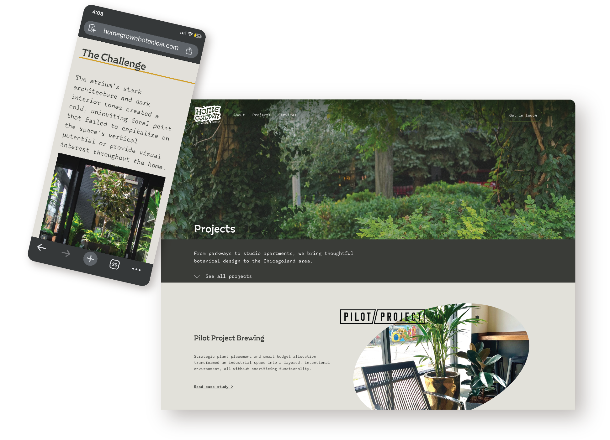
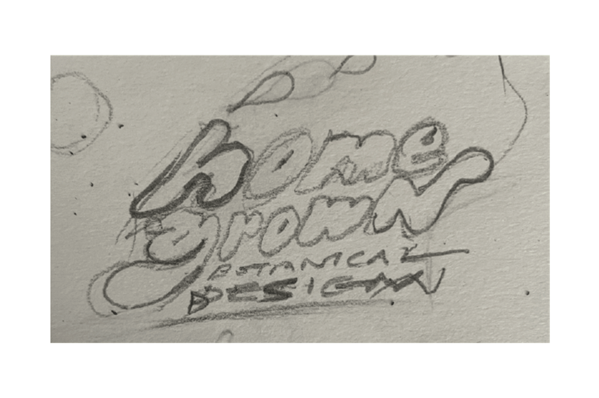
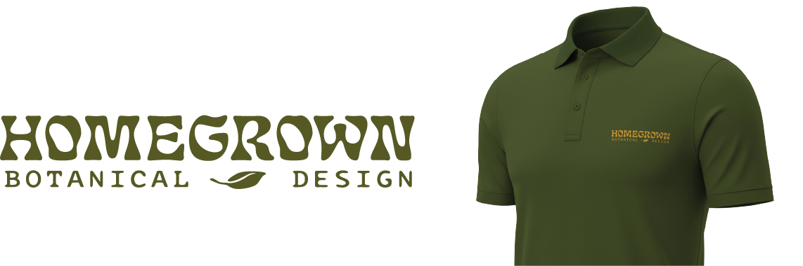

Designing a fresh, professional presence for a Chicago landscape and botanical designer.
Context
The Homegrown Botanical team needed a web presence that matched their vibe and expertise. I delivered a branding kit that was professional enough for big name clients, while also still feeling playful and stylish enough to draw in out-of-the-box projects.
My Role
▸
Web Design
information architecture, Squarespace implementation, SEO
▸
Visual Design and Branding
color, typography, imagery, tone, copywriting, illustration
1. Branding and Color
Logo iteration keeping in mind organic letterforms, emphasis on plant material, and a suggestion of home.

Logo variations for diverse use cases like work polos and business cards.


Value proposition illustrations